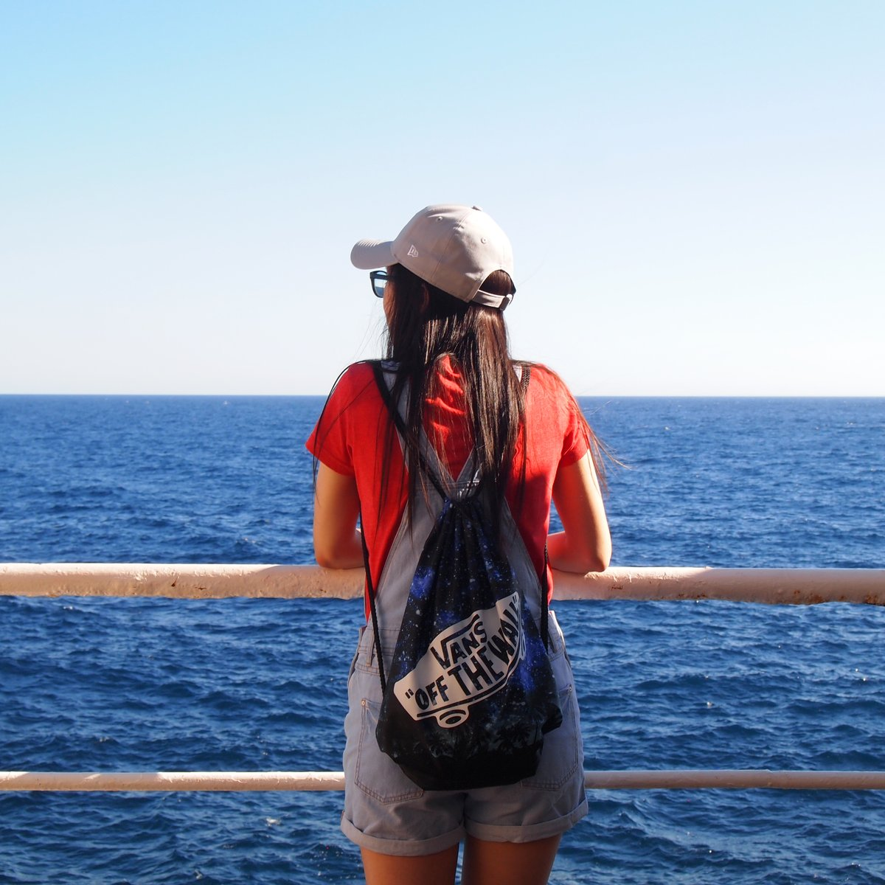

- 2022 – 2026
- Sandbox VR / Hong Kong & Vancouver Industrial & UX Designer
- 2019 – 2022
- Binatone Electronics Limited / Hong Kong Industrial Designer
- 2018
- Holland & Barrett / London UX Design Consultant
- 2017
- Gear Atelier Limited / Hong Kong Design Intern
Hi! I’m Cheryl.
An industrial designer based in Vancouver.
I began my career designing consumer electronics and gaming products in Hong Kong and Vancouver, working on a range of projects including VR controllers and accessories, portable audio devices, and baby monitors. These experiences shaped my foundation in taking ideas from early concept development through to production.
I always have a passion for exploring how materials and mechanisms can enhance user experience, often incorporating elements such as magnets, fabrics, and different plastics to create functional and engaging interactions.
Working across industrial design, UX/UI, and branding has shaped my approach to product development. I believe great products are more than well-designed objects, they are thoughtful experiences that connect user needs with business goals and brand identity.
The endless possibilities for creating and transforming everyday objects inspire me to stay proactive in an ever-evolving world. I strive to design products that are not only aesthetically appealing and practicable, but also make a positive contribution to people’s lives.
– This is my key aspiration as a designer.

Experience
I’ve had the opportunity to work with global brands, across all stages of product development – from research and rapid concept ideation to detailed engineering, cost optimisation, and production.
My work spans both fast-paced concept exploration and detailed design refinement, balancing user needs, technical constraints, and commercial requirements.
Working closely with engineering teams in China and Taiwan, I focus on design for manufacture, ensuring ideas are translated into well-resolved, production-ready products through hands-on collaboration.